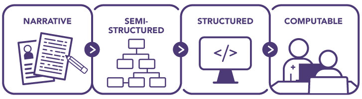

Goal 4: Create Health Information Technology that Promotes Appropriate Cancer Risk Assessment and Screening
Health information technology (IT) involves the processing, storage, and exchange of health information in an electronic environment. Examples of health IT include electronic health records (EHRs), personal health records, electronic prescribing systems, clinical decision support (CDS), and computable guidelines.
The vast and rapidly expanding body of health-related data creates challenges. Providers and patients alike are faced with more information than they can process in a reasonable amount of time. Health information technology (IT) has potential to help providers, patients, and healthcare systems quickly access and effectively use clinical knowledge and patient-specific data. Massive investments in health IT have led to nearly universal implementation of electronic health records (EHRs) in U.S. hospitals and medical practices;1,2 however, the benefits for clinical care have fallen short of expectations.3 Additional investment and commitment are needed to create more effective health IT systems and tools—including but not limited to EHRs—to facilitate high-quality personalized care.
Suboptimal application of the evidence-based clinical practice guidelines—including guidelines for cancer risk assessment and screening—is a critical problem that should be addressed through health IT. Machine-interpretable representations of clinical guidelines—or computable guidelines—could be used to create health IT tools, including clinical decision support (CDS), that allow providers and patients to quickly determine what care is recommended based on patient-specific factors. Cancer screening is particularly well suited to benefit from health IT, including computable guidelines and CDS, for multiple reasons:
- Screening eligibility should be widely and repeatedly assessed—Virtually all adults will be eligible for screening for one or more cancers over the course of their lives. Screening tests must be repeated on a regular basis to improve outcomes. Furthermore, recommendations must be revisited repeatedly because each person’s risk factors (e.g., family history, smoking history) and health history (e.g., diagnoses, results of prior screening tests) change over time and guidelines are updated based on new evidence. Algorithms that can be run automatically and modified as guidelines evolve would help providers and healthcare systems more quickly and efficiently mine records to identify patients eligible or overdue for screening.
- Screening guidelines are increasingly complex—Many factors are taken into account when assessing screening eligibility (see Cancer Screening and Genetic Testing May Be Affected By). Guidelines are likely to become increasingly complex as guideline makers incorporate additional factors (e.g., breast density for breast cancer) that help determine an individual’s cancer risk. In some cases, patients and providers also must weigh the pros and cons of different modalities available to screen for a given cancer (e.g., colonoscopy and fecal immunochemical test [FIT] for colorectal cancer). The recommended frequency of screening often differs based on the screening modality and individual factors. CDS can integrate person-specific information from multiple sources and present it to patients and providers in ways that facilitate assessment and shared decision-making.
- Screening is a multistep process—A provider recommendation for cancer screening is only the first step. Cancer screening often includes additional appointments at outside facilities. Timely follow-up, additional testing, and/or a modified schedule for future screening may be needed based on the result of each screen. Management of abnormal results in turn requires consideration of additional clinical guidelines and care recommendations. Health IT tools can be used to monitor initiation and completion of the screening process, as well as receipt of follow-up care, for individuals and groups of patients. CDS can incorporate multiple sets of screening and follow-up guidelines to ensure seamless care management. Health IT also can facilitate communication and handoffs among healthcare team members.
The Panel recommends creation of computable guidelines for cancer screening and use of these guidelines to create CDS for cancer risk assessment, screening, and follow-up care.
CANCER SCREENING AND GENETIC TESTING RECOMMENDATIONS MAY BE AFFECTED BY:
- Age
- Sex
- Family health history
- Smoking status/history
- Screening history
- Past screening test results
- Genetic testing results (for screening).
Recommendation 4.1
Create computable versions of cancer screening and risk assessment guidelines.
Cancer risk assessment, screening, and follow-up guidelines are issued by several organizations (Table 1) and are disseminated in narrative form to healthcare providers and systems through publication in peer-reviewed journals, organizational websites, and professional societies. Before being incorporated into health IT tools—including CDS or other tools—narrative guidelines must be converted to a more structured format (Figure 7). For automated tools, computable guidelines—a format that can be fully interpreted and executed by a computer—must be created. Currently, each health IT developer using a guideline independently renders a computable representation. This duplicative process is an inefficient use of resources that must be repeated every time guidelines are updated and can result in unintentional variability in guideline interpretation and implementation.
Figure 7
Development of Computable Guidelines
Adapted from: Boxwala AA, et al. J Am Med Inform Assoc. 2011;18:i132-9. Available from: https://www.ncbi.nlm.nih.gov/pubmed/22052898
Development of health IT tools would be more efficient if all cancer screening guidelines were publicly available in a computable format. Computable guidelines created using open-access data standards, such as Fast Healthcare Interoperability Resources (FHIR),4 are platform agnostic and could be readily used by health IT developers to create tools to support clinicians, healthcare systems, and patients. Tools could include CDS (see Recommendation 4.2), as well systems for quality measurement and reporting, generation of case reports, and creation of population registries. In addition to saving resources, the availability of computable guidelines would promote broader, more consistent, and faster implementation of cancer screening guidelines.
Standards, methods, and tools for translating guidelines to computable formats are actively being developed and refined (see Data and Exchange Standards).4-6 Creation of computable guidelines requires the expertise of a variety of informaticians capable of translating technical medical information into advanced logic that can be understood by computer systems. Ideally, informaticians would interface with guideline makers, clinical domain experts, and health IT developers to ensure that the programmed terminology and logic are accurate as well as usable and valid for downstream applications. Proactive collaboration between informaticians and guideline makers during the guideline development process can help identify unintentional gaps or lack of clarity in recommendations; addressing these issues through an iterative process can both strengthen the recommendations and facilitate translation to a computable form.
DATA AND EXCHANGE STANDARDS
Widespread development and adoption of data standards are essential to achieve interoperable healthcare systems and facilitate development and implementation of computable guidelines, CDS, and other tools that can be used across different settings and platforms. Data standards define the data to be collected as well as terminologies to represent those data and methods for encoding the data for transmission.
The Fast Healthcare Interoperability Resources (FHIR) standard has gained traction as the preferred standard for healthcare data. FHIR is built on modular components called resources that can be assembled in different ways. These resources are developed and refined by expert work groups in an open and transparent process. The FHIR Clinical Guidelines Implementation Guide—also referred to as Clinical Practice Guidelines (CPG)-on-FHIR—describes a standard approach and methodology for how to use FHIR to develop computable representations of narrative clinical guidelines that can be used to create CDS and other tools. While not yet comprehensive or fully refined, FHIR is a promising foundation for data sharing and interoperability.
FHIR resources have been and continue to be developed for areas relevant to cancer screening, including family history and genomics. Health IT developers should continue to expand FHIR through development of additional standards needed to support creation of interoperable CDS for cancer risk assessment and screening. Areas of high priority include smoking history and documentation of cancer screening results, including laboratory test and pathology results. Developers of EHRs, CDS, and other health IT tools should use FHIR standards whenever possible to facilitate data sharing and interoperability; when standards are not available, developers should work with the FHIR standards community to develop consensus-based data elements.
The Substitutable Medical Applications and Reusable Technologies (SMART) App Launch Framework allows third-party apps to be integrated seamlessly with any compatible EHR system, creating opportunity for large and small health IT developers alike to create tools to meet the needs of diverse end users. The number of compatible systems undoubtedly will grow, as the Office of the National Coordinator for Health Information Technology (ONC) 21st Century Cures Act Final Rule issued in 2020 requires EHRs to be enabled with FHIR and SMART App Launch Framework capabilities that are to be certified; the Rule also adopted the United States Core Data for Interoperability standards to promote interoperability.
View SourcesResources are needed to support these collaborations and catalyze generation of computable guidelines for cancer risk assessment and screening. Guideline makers with access to the necessary resources and expertise should incorporate creation of computable guidelines into their guideline development process. However, the Panel recognizes that many guideline-making organizations currently do not have the expertise or resources to make their guidelines computable. This could be done through grants to guideline organizations, researchers, or collaborative teams. Alternatively, computable guidelines could be directly created through targeted initiatives of federal agencies (see Making Cancer Screening Guidelines Computable). Computable guidelines should be shared through public resources, such as the AHRQ CDS Connect Repository, to facilitate their dissemination and use.7,8
MAKING CANCER SCREENING GUIDELINES COMPUTABLE
The CDC Division of Cancer Prevention and Control has launched an initiative to develop computable guidelines, CDS tools, and quality measures to enable improved adherence to cervical cancer screening and follow-up guidelines. As part of this effort, U.S. Preventive Services Task Force (USPSTF) guidelines for cervical cancer screening and other guidelines for management of abnormal screening results are being translated to a computable format using the CPG-on-FHIR standard. The team has interfaced with USPSTF and other guideline makers to ensure guideline representations are accurate. Once completed, the computable guidelines developed through the initiative will be publicly available through the AHRQ CDS Connect Repository.
View SourcesRecommendation 4.2
Create and deploy effective clinical decision support tools for cancer risk assessment and screening.
CDS can help providers and patients access and integrate clinical knowledge and patient-specific data to guide care (see Tools to Facilitate Clinical Decision-Making). CDS tools are not intended to replace provider judgment or patient decision-making; rather, they are intended to inform and facilitate care. Effective CDS would help alleviate the pressures on providers; they may be particularly beneficial for primary care providers, who are expected to address a wide range of issues within a limited time during appointments, and providers in settings with limited financial resources (e.g., Federally Qualified Health Centers, private practices). Automated CDS also could help reduce the impact of provider bias and ensure that cancer risk assessment is completed and screening recommendations are delivered to all populations.
Most EHR systems employ CDS to some extent, often through best practice alerts to providers. While these alerts can improve the safety and quality of care, low-quality alerts can lead to alert fatigue and even interfere with patient care.9 To effectively improve care, CDS must follow the Five Rights model: the right information must be delivered to the right people in the right formats, through the right channels, and at the right times in the clinical workflow (Figure 8).10 The key to good CDS begins with the right information; CDS must integrate patient-specific information with evidence-based guidelines (see Recommendation 4.1) and clinical best practices. Usability is key to the success of CDS. CDS for providers must be seamlessly integrated into clinical workflows and provide information in concise, understandable, and actionable formats. CDS also can be created to help inform patient decision-making and allow patients to securely share personal information with healthcare providers as desired; it is critical that information and questions included in patient-facing tools are presented in language that is easy to understand and apply.
Figure 8
Five Rights of Clinical Decision Support

Source: Sirajuddin AM, et al. J Healthc Inf Manag. 2009;23(4):38-45. Available from: https://www.ncbi.nlm.nih.gov/pubmed/19894486
Currently, many healthcare organizations develop and implement their own CDS in parallel, resulting in redundant effort and expense. Progress in development and adoption of standards for clinical data, data exchange, and CDS is providing opportunities to create a collection of shareable, scalable CDS that can easily be implemented or adapted for use in a variety of healthcare settings, including large healthcare systems and small independent practices.11,12 Health IT developers should use available standards (see Data and Exchange Standards) to the extent possible and build on the knowledge generated through development and implementation of earlier CDS. Evaluation of CDS is needed to measure impact on health outcomes, quality of care, safety, cost, patient satisfaction, and physician productivity. The results should inform improvements in systems and processes to maximize benefit for patients, providers, and healthcare systems.
CDS can be created by EHR vendors, healthcare systems, or third parties, such as academic researchers, patient advocacy organizations, or professional societies. Collaborative approaches that include multiple stakeholder groups and perspectives also may be beneficial. The reach of CDS would improve if developers shared code for their tools. This would provide opportunity for institutions with fewer resources—including small practices or healthcare settings with limited resources—to insert existing tools into their EHRs and customize them to meet their needs. The Panel encourages sharing of CDS, such as through the AHRQ CDS Connect Repository;7 sharing should be a prerequisite for any CDS created using public funds.
CDS should be integrated with EHRs to optimize workflow, facilitate data exchange, and avoid duplicate data entry. To this end, it is critical that EHR vendors and IT developers continue to pursue interoperability of health IT systems (see Data Sharing and Interoperability).
TOOLS TO FACILITATE CLINICAL DECISION-MAKING
CDS tools of different types are being developed by various groups. These tools vary in their design, complexity, and focus but share the goal of increasing high-quality care. The Penn Medicine Nudge Unit leverages insights from behavioral economics and psychology to design, implement, evaluate, and disseminate “nudges” that change the way information or choices are presented to steer decision-making toward evidence-based care. Nudges are codesigned with frontline clinicians, healthcare system leadership, and patients, then implemented and evaluated in clinical settings. The Unit has created numerous nudges for clinicians and patients. One EHR-based active choice nudge that prompted medical assistants and physicians resulted in increased physician ordering of colonoscopy and mammography.
CDS also can facilitate integration of patient-generated health data with clinical data and practice guidelines to help providers and patients make decisions about genetic testing, cancer screening, and other care. MeTree—which was developed with funding from the Department of Defense and the National Human Genome Research Institute Implementing Genomics into Clinical Practice (IGNITE) consortium—is a family and personal health history collection and CDS tool that can be integrated with EHR systems that support the SMART-FHIR standard. This web-based, patient-facing tool collects information on diet, exercise, smoking, and clinical history, as well as family health history related to numerous health conditions, including several cancers. This type of patient-reported information is often not present in EHRs or is not in structured or standardized formats. Giving patients the opportunity to enter information beforehand can increase the quantity and quality of data compared with what usually is collected during a primary care visit. Based on the information entered, MeTree provides clinical decision support for hereditary cancer syndromes as well as other cancers and diseases. A large, multi-institutional study of MeTree in diverse primary care populations found that nearly half of participants met criteria for more intensive risk management for one or more conditions. This illustrates the importance of systematic risk assessment in primary care settings and the feasibility of using standards-based tools to support data collection and clinical decision support.
View SourcesDATA SHARING AND INTEROPERABILITY
Lack of EHR interoperability is cited as a key shortcoming by providers. To be maximally effective, health IT systems must be able to communicate, exchange data, and use the information that has been exchanged without special effort by the recipient. This includes the need for structured data exchange of pathology and test results coming from laboratory information systems. This free flow of information will support continuity of care for patients who receive care in different healthcare systems or facilities. Access to comprehensive, longitudinal patient data is particularly relevant for cancer screening because the eligibility for and benefits of cancer screening often depend on a patient’s medical history, including the results of past tests. The President’s Cancer Panel supports the ongoing work of the Office of the National Coordinator for Health Information Technology to increase interoperability as well as reduce the regulatory and administrative burden of EHRs for clinicians, hospitals, and healthcare organizations.
View SourcesReferences
- Office of the National Coordinator for Health Information Technology. Office-based physician electronic health record adoption: Health IT Quick Stat #50 [Internet]. Washington (DC): ONC; 2019 Jan [cited 2021 May 12]. Available from: https://dashboard.healthit.gov/quickstats/pages/physician-ehr-adoption-trends.php
- Office of the National Coordinator for Health Information Technology. Percent of hospitals, by type, that possess certified health IT. Health IT Quick-Stat #52 [Internet]. Washington (DC): ONC; 2018 Sep [cited 2021 May 17]. Available from: https://dashboard.healthit.gov/quickstats/pages/certified-electronic-health-record-technology-in-hospitals.php
- National Academy of Medicine. Taking action against clinician burnout: a systems approach to professional well-being. Washington (DC): The National Academies Press; 2019. Available from: https://www.nap.edu/25521
- HL7 International. FHIR clinical guidelines implementation guide [Internet]. Ann Arbor (MI): HL7 International; [updated 2021 Feb 11; cited 2021 Sep 20]. Available from: http://hl7.org/fhir/uv/cpg/index.html
- Michel JJ, Flores EJ, Dutcher L, et al. Translating an evidence-based clinical pathway into shareable CDS: developing a systematic process using publicly available tools. J Am Med Inform Assoc. 2021;28(1):52-61. Available from: https://www.ncbi.nlm.nih.gov/pubmed/33120411
- Tso GJ, Tu SW, Oshiro C, et al. Automating guidelines for clinical decision support: knowledge engineering and implementation. AMIA Annu Symp Proc. 2016;2016:1189-98. Available from: https://www.ncbi.nlm.nih.gov/pubmed/28269916
- Agency for Healthcare Research and Quality. CDS Connect [Internet]. Rockville (MD): AHRQ; [cited 2021 Jul 29]. Available from: https://cds.ahrq.gov/cdsconnect
- Lomotan EA, Meadows G, Michaels M, et al. To share is human! Advancing evidence into practice through a national repository of interoperable clinical decision support. Appl Clin Inform. 2020;11(1):112-21. Available from: https://pubmed.ncbi.nlm.nih.gov/32052388
- Sutton RT, Pincock D, Baumgart DC, et al. An overview of clinical decision support systems: benefits, risks, and strategies for success. NPJ Digit Med. 2020;3:17. Available from: https://www.ncbi.nlm.nih.gov/pubmed/32047862
- Sirajuddin AM, Osheroff JA, Sittig DF, et al. Implementation pearls from a new guidebook on improving medication use and outcomes with clinical decision support. Effective CDS is essential for addressing healthcare performance improvement imperatives. J Healthc Inf Manag. 2009;23(4):38-45. Available from: https://www.ncbi.nlm.nih.gov/pubmed/19894486
- Middleton B, Sittig DF, Wright A. Clinical decision support: a 25 year retrospective and a 25 year vision. Yearb Med Inform. 2016;25(1 Suppl):S103-16. Available from: https://www.ncbi.nlm.nih.gov/pubmed/27488402
- Kawamoto K, Del Fiol G, Lobach DF, Jenders RA. Standards for scalable clinical decision support: need, current and emerging standards, gaps, and proposal for progress. Open Med Inform J. 2010;4:235-44. Available from: https://www.ncbi.nlm.nih.gov/pubmed/21603283